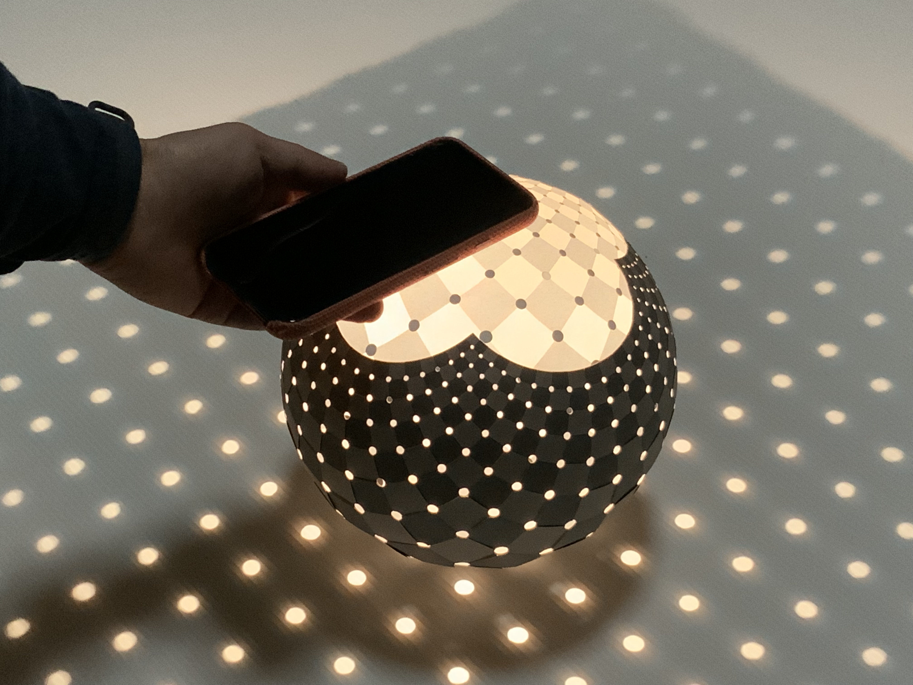

Stereographic projection


A point light illuminates the grid points on the ground.

Load packages
using Luxor
using IntervalSets
using BasicBSpline
using BasicBSplineFitting
using StaticArrays
using ElasticSurfaceEmbeddingCompute the embedding shapes
Shape definition
ElasticSurfaceEmbedding.𝒑₍₀₎(u¹,u²) = SVector(2*u¹/(1+u¹^2+u²^2), 2*u²/(1+u¹^2+u²^2), (-1+u¹^2+u²^2)/(1+u¹^2+u²^2))
n = 10
D(i,n) = (-2.0..2.0, 2(i-1)/n..2i/n)D (generic function with 1 method)Strain estimation
show_strain(D(1,n))┌ Info: Strain - domain: [-2.0, 2.0]×[0.0, 0.2]
└ Predicted: (min: -0.00653530699604614, max: 0.013070613992092282)
Main computation
steptree = StepTree()
for i in 1:10
initial_state!(steptree, D(i,n))
newton_onestep!(steptree, fixingmethod=:fix3points)
newton_onestep!(steptree)
refinement!(steptree, p₊=(0,1), k₊=suggest_knotvector(steptree))
newton_onestep!(steptree)
newton_onestep!(steptree)
pin!(steptree)
endHelper functions to export svg images
function create_bezierpath(C::BSplineManifold{1,(3,),Point})
P = bsplinespaces(C)[1]
k = knotvector(P)
k′ = 3*unique(k) + k[[1,end]]
P′ = BSplineSpace{3}(k′)
C′ = refinement(C,P′)
a′ = controlpoints(C′)
n′ = dim(P′)
m = (n′-1) ÷ 3
bezierpath = BezierPath([BezierPathSegment(a′[3i-2], a′[3i-1], a′[3i], a′[3i+1]) for i in 1:m])
return bezierpath
end
function svector2point(M::BSplineManifold, unitlength)
P = bsplinespaces(M)
a = controlpoints(M)
a′ = [Point(p[1]*unitlength[1], -p[2]*unitlength[1]) for p in a]
M′ = BSplineManifold(a′, P)
return M′
endsvector2point (generic function with 1 method)Settings for export
xlims=(-3,3)
ylims=(-1,1)
unitlength = (200, "mm")
r = 0.0250.025Export all embedded shapes with arcs
mkpath("stereographicprojection")
for i in 1:10
M = svector2point(steptree.steps[6i].manifold, unitlength)
D¹ = domain(bsplinespaces(M)[1])
D² = domain(bsplinespaces(M)[2])
u¹s = range(extrema(D¹)...,21)[2:end-1]
u²₋ = minimum(D²)
u²₊ = maximum(D²)
width = (xlims[2] - xlims[1]) * unitlength[1]
height = (ylims[2] - ylims[1]) * unitlength[1]
filepath = joinpath("stereographicprojection", "embedding-$(i).svg")
Drawing(width, height, filepath)
origin()
background("white")
sethue("red")
C = M(:,u²₋)
path = create_bezierpath(C)
drawbezierpath(path, :stroke)
C = M(:,u²₊)
path = create_bezierpath(C)
drawbezierpath(path, :stroke)
C = M(2,:)
path = create_bezierpath(C)
drawbezierpath(path, :stroke)
C = M(-2,:)
path = create_bezierpath(C)
drawbezierpath(path, :stroke)
for u¹ in u¹s
k = KnotVector([0,0,0,0,0.25,0.5,0.75,1,1,1,1])
P = BSplineSpace{3}(k)
dim(P)
a = fittingcontrolpoints(t -> M(u¹+r*cospi(t), u²₋+r*sinpi(t)), P)
C = BSplineManifold(a,P)
path = create_bezierpath(C)
drawbezierpath(path, :stroke)
a = fittingcontrolpoints(t -> M(u¹+r*cospi(t), u²₊-r*sinpi(t)), P)
C = BSplineManifold(a,P)
path = create_bezierpath(C)
drawbezierpath(path, :stroke)
end
finish()
preview()
script = read(filepath, String)
lines = split(script, "\n")
lines[2] = replace(lines[2],"pt\""=>"mm\"")
write(filepath, join(lines,"\n"))
endThe output files will be saved as embedding-$(i).svg. By modifying these files, we can place all of the shapes in yatsugiri-size (八ツ切, approximately 270×390 mm) paper like this:
Cutting and weaving these shape will result the sphere in the top image. Please check the following references for more information.
References
- 紙工作で立体射影をつくった話
- 立体射影製作ã‚ット
- Stereographic projection weaving kit
- Further adventures in stereographic projection
This page was generated using DemoCards.jl and Literate.jl.